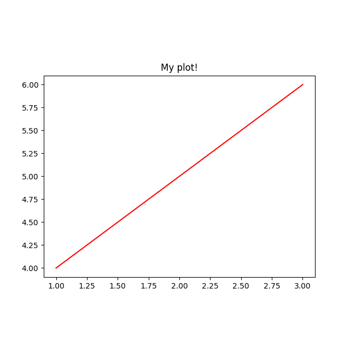
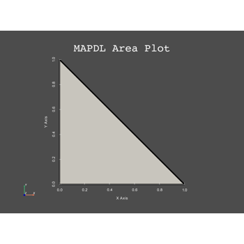
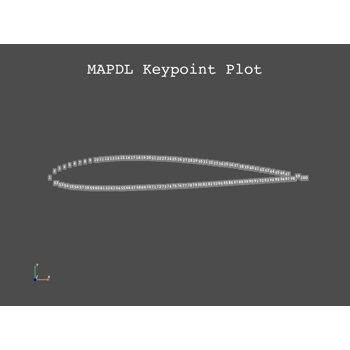

SpaceCon 2022 PyAnsys Tutorials# These tutorials demonstrate full examples using the PyAnsys libraries. Content#  Short Python Tutorial Short Python Tutorial  PyMAPDL Tutorial PyMAPDL Tutorial  A full PyMAPDL example A full PyMAPDL example Gallery generated by Sphinx-Gallery